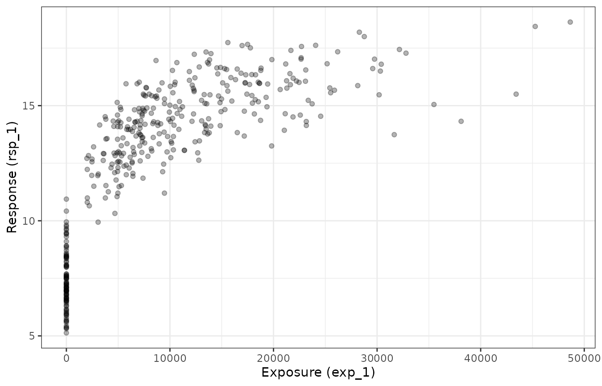
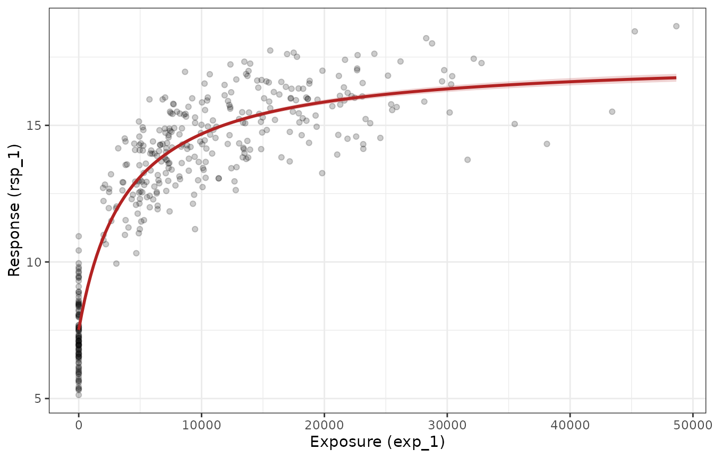

Fitting Emax models for continuous outcomes
Source:vignettes/articles/fitting-emax-models.Rmd
fitting-emax-models.RmdThis article walks through the process of fitting an Emax regression
model to a continuous outcome with
emax_nls(). It describes the model that is being fitted,
sets out the estimation problem that emax_nls() solves
under the hood, and then works through how to read and interpret the
outputs. Binary outcomes follow a slightly different logic — they are
fitted with emax_logistic() on the logit scale using
iterative reweighted least squares — and are covered in a separate
article.
The Emax model
The Emax model is a widely used exposure-response model in pharmacometrics. It describes a smooth, saturating relationship between a measure of drug exposure (a dose, a concentration, an AUC) and a response. As exposure increases the response moves away from a baseline value and asymptotes towards a maximal effect. The appeal of the model is that its parameters have direct pharmacological meaning.
The hyperbolic Emax function
In its basic (hyperbolic) form, the expected response at exposure is
The three structural parameters are:
- — the baseline response, i.e. the expected response at zero exposure (). This is the placebo or pre-treatment level.
- — the maximal effect, the largest change from baseline that the drug can produce. As the response approaches .
- — the exposure that produces half of the maximal effect. When the term , so the response is exactly halfway between and . It is a measure of potency: a smaller means the drug reaches its effect at lower exposures.
Because
is a strictly positive quantity that often spans several orders of
magnitude, the package estimates it on the log scale. Internally the
model works with
,
which keeps the parameter unconstrained and tends to make the
optimisation better behaved. This is why the parameter is named
logEC50 throughout the interface.
The sigmoidal (Hill) extension
The hyperbolic model can be generalised by adding a Hill coefficient , which controls the steepness of the curve:
When
this reduces to the hyperbolic model. Larger values of
produce a steeper, more switch-like response. Like
,
the Hill coefficient is positive and is estimated on the log scale as
logHill. A sigmoidal model is requested by including a
logHill term in the covariate model (see below); without
it, emax_nls() fits the hyperbolic model.
Adding covariates
In practice the structural parameters often depend on subject-level characteristics: baseline severity might shift , body weight might modify , and so on. In this package each structural parameter is given its own linear submodel. For example, allowing a continuous covariate to act on the baseline,
means that the baseline response is itself a linear function of the covariate . Each structural parameter (, , , and optionally ) can carry its own covariates in the same way. The intercept terms are the values the parameter takes when all covariates are zero.
You specify these submodels with a list of two-sided formulas passed
to the covariate_model argument. A formula like
E0 ~ age + group puts age and
group on the baseline, while Emax ~ 1 says
“estimate a single intercept, no covariates” for the maximal effect. At
a minimum you must supply formulas for E0,
Emax, and logEC50.
The example data
The package ships with a synthetic dataset, emax_df,
that we use throughout. It is entirely simulated, which is convenient
here because we know the true data-generating parameters and can check
the estimates against them.
emax_df
#> # A tibble: 400 × 12
#> id dose exp_1 exp_2 rsp_1 rsp_2 cnt_a cnt_b cnt_c bin_d bin_e cat_f
#> <int> <dbl> <dbl> <dbl> <dbl> <dbl> <dbl> <dbl> <dbl> <dbl> <dbl> <fct>
#> 1 1 200 12332. 13004. 15.7 1 3.85 5.89 4.31 1 1 grp 1
#> 2 2 300 18232. 17244. 15.3 1 4.78 7.25 3.73 1 1 grp 1
#> 3 3 0 0 0 5.65 0 1.22 9.24 2.41 1 1 grp 1
#> 4 4 200 9394. 8839. 12.5 0 2.68 7.14 3.76 1 1 grp 2
#> 5 5 200 7088. 9827. 13.2 1 4.27 5.57 9.05 0 1 grp 2
#> 6 6 300 30402. 28483. 16.8 1 6.09 6.08 4.62 0 1 grp 1
#> 7 7 300 21679. 17137. 17.4 1 7.5 8.1 2.08 0 1 grp 3
#> 8 8 100 15506. 13377. 15.9 0 3.65 6.89 3.56 0 1 grp 1
#> 9 9 0 0 0 7.3 0 4.84 3.77 7.44 0 1 grp 2
#> 10 10 200 5331. 5251. 12.8 1 4.45 3.42 1.66 1 0 grp 3
#> # ℹ 390 more rowsThe columns we care about for a continuous-outcome analysis are:
-
exp_1— an exposure variable (there is a correlated second exposure metric,exp_2), -
rsp_1— the continuous response, -
cnt_a,cnt_b,cnt_c— continuous covariates, -
bin_d,bin_e— binary covariates, -
cat_f— a categorical covariate.
The continuous response rsp_1 was generated from a
hyperbolic Emax model with
,
,
and
(so
),
Gaussian noise with standard deviation
,
and a genuine effect of cnt_a on the baseline (a
coefficient of
).
The other covariates have no true effect. A good fit should recover
these values, which gives us something concrete to look for when we
interpret the output.
A quick look at the raw exposure-response relationship shows the characteristic Emax shape — a rise from baseline that flattens out at higher exposures:
ggplot(emax_df, aes(exp_1, rsp_1)) +
geom_point(alpha = 0.3) +
labs(x = "Exposure (exp_1)", y = "Response (rsp_1)")
The estimation problem
Given the structural and covariate models, fitting reduces to finding
the parameter values that make the predicted responses as close as
possible to the observed responses. Writing
for the Emax prediction at the
-th
observation and
for the full vector of coefficients, emax_nls() solves the
nonlinear least squares problem
Under the usual assumption of independent, normally distributed
errors with constant variance, this least squares solution is also the
maximum likelihood estimate. (If you supply a weights
vector via emax_nls_options(), the package minimises the
weighted sum of squares instead.)
Two features make this harder than ordinary linear regression:
- It is nonlinear. The prediction is not a linear function of the parameters (the exposure enters through ), so there is no closed-form solution. The estimate is found by iterative optimisation.
- It needs starting values. Iterative optimisers must be given an initial guess for every parameter, and for nonlinear models a poor guess can lead to non-convergence or a local optimum.
Starting values
You rarely need to construct starting values by hand.
emax_nls() calls emax_nls_init(), which uses
data-driven heuristics — fitting a crude log-linear model to the dosed
observations, reading off a baseline from the placebo records, and so on
— to produce sensible starting values, together with lower and upper
bounds for bounded optimisation. You can inspect what it comes up
with:
emax_nls_init(
structural_model = rsp_1 ~ exp_1,
covariate_model = list(E0 ~ cnt_a, Emax ~ 1, logEC50 ~ 1),
data = emax_df
)
#> # A tibble: 4 × 5
#> parameter covariate start lower upper
#> <chr> <chr> <dbl> <dbl> <dbl>
#> 1 E0 cnt_a 0 -7.84 7.84
#> 2 E0 Intercept 9.73 0.528 18.9
#> 3 Emax Intercept 7.74 -1.47 16.9
#> 4 logEC50 Intercept 8.69 6.63 10.8The parameter and covariate columns
identify each coefficient, start is the initial guess, and
lower/upper are the bounds used when a bounded
algorithm is selected.
Choosing an optimiser
The optimisation algorithm and other fitting controls are set with
emax_nls_options(), whose result is passed to the
opts argument of emax_nls(). Three algorithms
are supported:
-
"gauss"(the default) — the Gauss-Newton algorithm, equivalent to the default method instats::nls(). -
"port"— bounded optimisation using thenl2solroutine from the PORT library. This respects thelower/upperbounds and is useful when parameters must stay within a plausible range. -
"levenberg"— the Levenberg-Marquardt algorithm viaminpack.lm::nlsLM(), which is often more robust when starting values are poor.
emax_nls_options()
#> $optim_method
#> [1] "gauss"
#>
#> $optim_control
#> $optim_control$maxiter
#> [1] 50
#>
#> $optim_control$tol
#> [1] 1e-05
#>
#> $optim_control$minFactor
#> [1] 0.0009766
#>
#> $optim_control$printEval
#> [1] FALSE
#>
#> $optim_control$warnOnly
#> [1] FALSE
#>
#> $optim_control$scaleOffset
#> [1] 0
#>
#> $optim_control$nDcentral
#> [1] FALSE
#>
#>
#> $quiet
#> [1] FALSE
#>
#> $weights
#> NULL
#>
#> $na.action
#> function (object, ...)
#> UseMethod("na.omit")
#> <bytecode: 0x5618b0873288>
#> <environment: namespace:stats>
#>
#> $max_time
#> [1] InfFitting the model
With the pieces in place, fitting the model is a single call. We
specify the structural_model (response and exposure), the
covariate_model (a submodel for each structural parameter),
and the data:
mod <- emax_nls(
structural_model = rsp_1 ~ exp_1,
covariate_model = list(
E0 ~ cnt_a, # allow the baseline to depend on cnt_a
Emax ~ 1, # single intercept for the maximal effect
logEC50 ~ 1 # single intercept for log-EC50
),
data = emax_df
)Before doing anything with a fitted object it is worth confirming that the optimiser converged. If it did not, most methods return a placeholder rather than misleading numbers:
emax_converged(mod)
#> [1] TRUEPrinting the object gives a compact summary: the structural model, the covariate submodels, the model type (hyperbolic or sigmoidal), and a coefficient table.
mod
#> Structural model:
#>
#> Exposure: exp_1
#> Response: rsp_1
#> Emax type: hyperbolic
#> Response type: continuous
#>
#> Covariate model:
#>
#> E0: E0 ~ cnt_a
#> Emax: Emax ~ 1
#> logEC50: logEC50 ~ 1
#>
#> Model fit:
#>
#> Observations: 400
#> Residual df: 396
#> Residual std. error: 0.5108
#> AIC: 603.6
#>
#> Coefficients (95% CI):
#>
#> label estimate std_error lower upper
#> 1 E0_cnt_a 0.486 0.0116 0.463 0.509
#> 2 E0_Intercept 5.05 0.0759 4.91 5.20
#> 3 Emax_Intercept 9.97 0.112 9.75 10.2
#> 4 logEC50_Intercept 8.27 0.0394 8.19 8.35
#>
#> Use summary() for hypothesis tests.Interpreting the output
Coefficients
The fitted coefficients are extracted with coef(). Each
name encodes a structural parameter and a term:
E0_Intercept is the baseline intercept,
E0_cnt_a is the slope of the baseline on
cnt_a, Emax_Intercept is the maximal effect,
and logEC50_Intercept is log-EC50.
coef(mod)
#> E0_cnt_a E0_Intercept Emax_Intercept logEC50_Intercept
#> 0.4861 5.0548 9.9697 8.2688Reading these against the known truth: E0_Intercept
should be near
,
E0_cnt_a near
,
Emax_Intercept near
,
and logEC50_Intercept near
.
Because logEC50 (and logHill, if present)
are estimated on the log scale, their raw coefficients are not on the
most interpretable units. Setting back_transform = TRUE
exponentiates them and drops the log prefix, so
logEC50_Intercept becomes EC50_Intercept on
the exposure scale:
coef(mod, back_transform = TRUE)
#> E0_cnt_a E0_Intercept Emax_Intercept EC50_Intercept
#> 0.4861 5.0548 9.9697 3900.4237The back-transformed should land near the true value of .
Standard errors, tests, and confidence intervals
summary() returns a tidy coefficient table combining the
estimate, its standard error, a
-statistic
and
-value
(testing whether the coefficient differs from zero), and a confidence
interval.
summary(mod)
#> # A tibble: 4 × 7
#> label estimate std_error t_statistic p_value ci_lower ci_upper
#> <chr> <dbl> <dbl> <dbl> <dbl> <dbl> <dbl>
#> 1 E0_cnt_a 0.486 0.0116 42.1 3.63e-148 0.463 0.509
#> 2 E0_Intercept 5.05 0.0759 66.6 4.16e-217 4.91 5.20
#> 3 Emax_Intercept 9.97 0.112 89.3 2.11e-264 9.75 10.2
#> 4 logEC50_Intercept 8.27 0.0394 NA NA 8.19 8.35The
-value
for E0_cnt_a should be small, reflecting the real covariate
effect built into the data, whereas a covariate with no true effect
would show a large
-value
and an interval straddling zero. The back_transform and
conf_level arguments work here too:
summary(mod, conf_level = 0.99, back_transform = TRUE)
#> # A tibble: 4 × 7
#> label estimate std_error t_statistic p_value ci_lower ci_upper
#> <chr> <dbl> <dbl> <dbl> <dbl> <dbl> <dbl>
#> 1 E0_cnt_a 0.486 0.0116 42.1 3.63e-148 0.456 0.516
#> 2 E0_Intercept 5.05 0.0759 66.6 4.16e-217 4.86 5.25
#> 3 Emax_Intercept 9.97 0.112 89.3 2.11e-264 9.68 10.3
#> 4 EC50_Intercept 3900. NA NA NA 3519. 4313.For confidence intervals on their own, confint()
computes profile likelihood intervals rather than
simple Wald (estimate
2 SE) intervals. Profile intervals are generally preferred for nonlinear
models because they do not assume the likelihood surface is quadratic
around the estimate, so they can be asymmetric:
confint(mod)
#> 2.5% 97.5%
#> E0_cnt_a 0.4634 0.5089
#> E0_Intercept 4.9055 5.2041
#> Emax_Intercept 9.7525 10.1915
#> logEC50_Intercept 8.1909 8.3455Residual variability
The residual standard deviation — the estimated standard deviation of
the error term — is returned by sigma(). For this dataset
it should be close to the true noise level of
:
sigma(mod)
#> [1] 0.5108Related quantities include deviance() (the residual sum
of squares for a continuous-outcome model), df.residual(),
and nobs().
Fitted values and predictions
fitted() returns the model’s predictions at the observed
data points, and residuals() the corresponding raw
residuals:
head(fitted(mod))
#> [1] 14.501 15.591 5.648 13.402 13.562 16.852
head(residuals(mod))
#> [1] 1.169354 -0.331349 0.002094 -0.942470 -0.311531 -0.051552predict() is more flexible: it accepts
newdata and can return standard errors and confidence or
prediction intervals. To visualise the fitted exposure-response curve we
can predict over a grid of exposures, holding the covariate
cnt_a at its mean. Because the baseline depends on
cnt_a, the curve is drawn for an “average” subject.
grid <- tibble(
exp_1 = seq(0, max(emax_df$exp_1), length.out = 200),
cnt_a = mean(emax_df$cnt_a)
)
pred <- predict(mod, newdata = grid, interval = "confidence")
curve <- tibble(
exp_1 = grid$exp_1,
fit = pred[["fit"]],
lwr = pred[["lwr"]],
upr = pred[["upr"]]
)
ggplot(mapping = aes(exp_1)) +
geom_point(aes(y = rsp_1), data = emax_df, alpha = 0.2) +
geom_ribbon(
aes(ymin = lwr, ymax = upr),
data = curve,
fill = "firebrick",
alpha = 0.2
) +
geom_line(aes(y = fit), data = curve, colour = "firebrick", linewidth = 1) +
labs(x = "Exposure (exp_1)", y = "Response (rsp_1)")
The solid line is the estimated mean response and the shaded band is
the pointwise confidence band for that mean. Use
interval = "prediction" instead if you want an interval for
a new observation rather than for the mean.
If you need the underlying prediction function itself — for instance
to evaluate the curve at arbitrary parameter values —
emax_fun() extracts it from the fitted object.
Comparing models
Adding a covariate defines a nested pair of models, which can be compared. Here we fit a baseline model with no covariates and compare it to the model above.
mod_0 <- emax_nls(
structural_model = rsp_1 ~ exp_1,
covariate_model = list(E0 ~ 1, Emax ~ 1, logEC50 ~ 1),
data = emax_df
)
# information criteria: lower is better
AIC(mod_0, mod)
#> df AIC
#> mod_0 4 1281.1
#> mod 5 603.6
# likelihood-ratio style comparison of the nested models
anova(mod_0, mod)
#> Analysis of Variance Table
#>
#> Model 1: rsp_1 ~ ((1 * E0_Intercept)) + exp_1 * ((1 * Emax_Intercept))/(exp_1 + exp((1 * logEC50_Intercept)))
#> Model 2: rsp_1 ~ ((cnt_a * E0_cnt_a) + (1 * E0_Intercept)) + exp_1 * ((1 * Emax_Intercept))/(exp_1 + exp((1 * logEC50_Intercept)))
#> Res.Df Res.Sum Sq Df Sum Sq F value Pr(>F)
#> 1 397 565
#> 2 396 103 1 461 1769 <2e-16 ***
#> ---
#> Signif. codes: 0 '***' 0.001 '**' 0.01 '*' 0.05 '.' 0.1 ' ' 1Because cnt_a genuinely affects the response, the richer
model should have the lower AIC and the anova() comparison
should favour it. BIC() is available too and applies a
heavier penalty per parameter.
A sigmoidal example
To fit a sigmoidal model, add a logHill term to the
covariate model. Here we estimate a single Hill coefficient with no
covariates on it:
mod_sig <- emax_nls(
structural_model = rsp_1 ~ exp_1,
covariate_model = list(E0 ~ cnt_a, Emax ~ 1, logEC50 ~ 1, logHill ~ 1),
data = emax_df
)
coef(mod_sig, back_transform = TRUE)
#> E0_cnt_a E0_Intercept Emax_Intercept EC50_Intercept Hill_Intercept
#> 0.4864 5.0544 9.9068 3866.1810 1.0173The data were generated with a Hill coefficient of
,
so the back-transformed Hill_Intercept should sit near
and the sigmoidal model should offer little improvement over the
hyperbolic one — which is exactly the kind of check AIC()
is for:
AIC(mod, mod_sig)
#> df AIC
#> mod 5 603.6
#> mod_sig 6 605.6Where to go next
This article covered the mechanics of fitting and interpreting a single continuous-outcome Emax model. From here you might look at:
-
Covariate selection. When there are many candidate
covariates,
emax_scm_forward()andemax_scm_backward()automate stepwise addition and elimination, andemax_scm_history()records every model that was tried. -
Simulation. The
simulate()method draws new response datasets from the fitted model while propagating parameter uncertainty, which is useful for predictive checks and simulation-based confidence bands. -
Binary outcomes. For 0/1 responses, use
emax_logistic(), which places the Emax model on the logit scale and estimates it by iterative reweighted least squares. It is described in its own article.